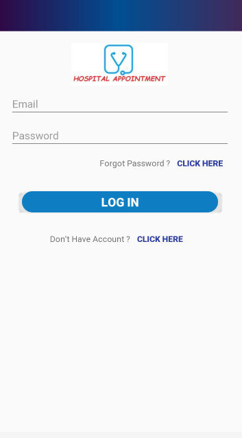
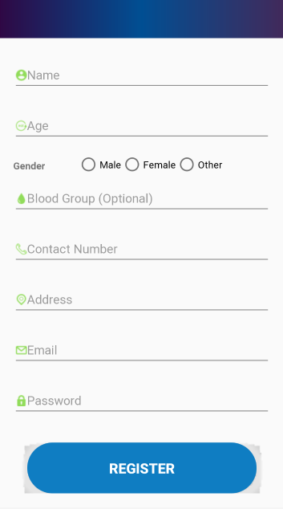

Software Requirements Specification
Hospital Management System
Prepared by Mashfiq Rizvee ID: 1811173042 Aqila Hassan ID: 1813210642Abir Hossain Rohan ID: 1811486042
Table of Contents
Revision History Table
V1.1
1. Introduction
1.1 Purpose
Purpose of Software Requirements Specification (SRS) is to describe the specification and description of our project ''Hospital Appointment System''. This Software Requirements Specification illustrates, in clear terms, the system's primary uses and required functionality so that the next developers can easily understand what we did and how to change anything if it is required.
1.2 Business Case and Relevance to Gartner’s Prediction
Not Applicable
1.3 Document Conventions
The document currently in view is in accordance with IEEE SRS writing convention. Important quotes and (or) notations are highlighted by BLUE color and the font used is Arial.
1.4 Intended Audience and Reading Suggestions
This document is created with the intention of fulfilling the following criteria:
- For team’s use (including all members along with the project manager)
- For marketing people in order to bring in potential clients
- For log-keepers to smoothen updating process
- For developers to help in impending updates and modifications
- For testers to ensure standard debugging methods
1.5 Product Scope
- The app will provide the parties involved to get a hassle-free solution.
- The patients will be able to connect to the doctor directly without any hassle
- The patients will be able to check the doctors' portfolio with a few clicks.
- The user-experience/user-interface(UX/UI) will be clean, plain and smooth besides being intuitive.
- The design of the website will be following with adaptive display size facility.
- IAM (Identity and Access Management) will enable users to login with their social accounts.
- Deployment for multi-platform will allow users to use it on their favorite electronic gadgets.
The need for healthcare services is growing with the increase in population and the number of patients who seek health care at hospitals, medical facilities, holistic groups, and physicians practice has improved significantly.These bring a new set of challenges for the staff of the facility and administrators. Online scheduling software, a recent technological advancement, has made the booking process in hospitals easier for both patients and administrative staffs.The online scheduling systems are also known in many names such as online booking application, online scheduler, online scheduling software, and more. It is one of the most commonly used web-based applications and enables individuals to securely and conveniently book their reservations and requests online via a laptop, tablet, smartphone, computer, and other web-connected devices.
1.6 References
The reference of IEEE SRS documentation was taken as format in creation of this document.
2. Overall Description
This section deals with a broad overview of the product Hospital Appointment System, explaining the functionalities and goals that the software aims to achieve. It also provides details on the dependencies, constraints, operating environment of the product along with user classes and user manuals.
2.1 Product Perspective
There will be user friendly smartphone application and web application for the patients. This appointment scheduling system will ensure a patient's direct communication with a doctor. By using these applications, patients shall be able to schedule a convenient time from doctors' available hours. This is the main perspective of our product.
2.2 Product Functions
This appointment scheduling system will ensure a patient's direct communication with a doctor. By using these applications, patients shall be able to schedule a convenient time from doctors' available hours. This is the main perspective of our product.The product functions are heavily user dependent (as elaborated in System Features section). The admin's function is to only maintain the software and update it whenever necessary. In order to make the functions comprehensible, a use case diagram of the user.
2.3 User Classes and Characteristics
| Class | Characteristics |
|---|---|
| System Administrator | Can login to create and delete users, assign role and modify patient list. |
| Doctors | Doctor will register, login, manage appointments. |
| Patients | Patients will register, login, view doctors list and can choose which to time to schedule. |
2.4 Operating Environment
- The both patient and doctor website will run on most of the common browsers like Google Chome, Firefox, Edge.
- There will be an android app too.
2.5 Design and Implementation Constraints
- Product must be ready for delivery by deadline
- This document must be followed srictly by the designers and developers
2.6 User Documentation
- User will get this documentation with the application
- There will be customer support through email
2.7 Assumptions and Dependencies
- User has to connect to internet to upload reading information
- Server must be always active
3. External Interface Requirements
3.1 User Interfaces
When the user uses the service for the first time, they will be prompted the registration page. Already registered users can select to login through a button which will bring them to a log-in page. Name, Password, Address, Phone Number will be collected from the registration page. Users should be able to login by using their email and password. User can omit the login process on the web version of the system, they will be opted to login in future if they make an appointment. The user can search for a Doctor by using speciality, doctors name or appointment schedule. They can also do a voice search by saying the doctors name. Patients will be able to search the appointment based on speciality or available schedule tags of the doctors'. Every user will have a profile page from where they can view/edit their user information. They can also delete their account from this page. When a patient clicks on an appointment it will bring them to that specific doctors portfolio. This portfolio will contain name, speciality and description of the doctor. However, they can schedule an appointment from the available hours of the doctor.
 
3.1.1 Webpage: Doctor View

3.1.2 Webpage: Patient view

3.1.3 Webpage: Public view

3.2 Hardware Interfaces
- Screen offers intuitive information about products. No need of addition of special hardwares.
3.3 Software Interfaces
- Browser with HTML5 support will allow great user experience.
- CSS will support responsive website.
- Bootstrap support will ensure an interactive user experience.
4. System Features
4.1 Use Cases
4.2 Expanded Use Case
Use Case (Register)
Register
| Name | Register |
|---|---|
| Actors | User(patient, doctor) |
| Type | Primary |
Typical course of events:
| Actor Action | System Response |
|---|---|
| 1) User requests for registration page. | 2) System will generate the page. |
| 3) User will fill the required fields (Name, email, contact number, password). | 4) System will check whether the fields are correctly filled or not. |
| 5) User will be registered for the application. | 6) System will redirect user to the login page. |
Exception:
1)The user fill unformatted information.2)Server is down so form did not reach to database server.
Use Case (Register Verification)
Register Verification
| Name | Register Verification |
|---|---|
| Actors | System |
| Type | Primary |
Typical course of events:
| Actor Action | System Response |
|---|---|
| 1) System will verify each required field is filled by user & there does not exist a duplicate user. | |
| 2)System will verify that the data entered mathces the validation rules. |
Exception:
1) The user was unable to register duo to not being able to connect to server.
Use Case (Login)
Login
| Name | Login |
|---|---|
| Actors | Registered User(Patient, Doctor, Admin) |
| Type | Primary |
Typical course of events:
| Actor Action | System Response |
|---|---|
| 1) User will request for sign in page. | 2) System will generate the page. |
| 3) User will fill the required fields(email and password). | 4) System will check whether the fields are correctly filled or not. |
| 5) User will be logged into the website. |
Exception:
1) the user will unformatted information. 2) Server is down so form did not reach to database server.
Use Case (Logout)
Logout
| Name | Logout |
|---|---|
| Actors | Registered User(Patient, Doctor, Admin) |
| Type | Primary |
Typical course of events:
| Actor Action | System Response |
|---|---|
| 1) User will request for logout by pressing logout button. | 2) System will generate the login page. |
Exception:
1) Server is down so system can not redirect login page. 2) If there is no internet connection user can not logout successfully.
Use Case (Login Verification)
Login Verification
| Name | Login Verification |
|---|---|
| Actors | System |
| Type | Primary |
Typical course of events:
| Actor Actions | System Response |
|---|---|
| 1) System will verify user input data against stored data in database for authorization. | |
| 2)System will output message based on the success of the authorization process. |
Exception:
1) the user was unsuccessful to login due to login data mismatch with server. 2) The user was unable to login due to not being able to connect to server.
Use Case (Appointment Management)
Appointment Management
| Name | Appointment Management |
|---|---|
| Actors | Doctor |
| Type | Primary |
Typical Course of events:
| Actor Action | System Response |
|---|---|
| Doctor will click on the appointment management button | System will respond by showing a drop-down list |
| System will show other options under appointment management |
Use Case (patient list)
Patient list
| Name | Patient list |
|---|---|
| Actors | Doctor |
| Type | Primary |
Typical Course of events:
| Actor Action | System Response |
|---|---|
| Doctor will click on the patients list button from the drop down menu | System will respond by showing all the patients registered an appointment |
Exception:1) If the internet will goes down, system will redirect the same page.
Use Case (Appointment list)
appointment list
| Name | Appointmentlist |
|---|---|
| Actors | Doctor |
| Type | Primary |
Typical Course of events:
| Actor Action | System Response |
|---|---|
| Doctor will click on the appointment list button from the drop down menu | System will respond by showing a list of uploaded material. |
Use Case (Analytics)
Analytics
| Name | Analytics |
|---|---|
| Actors | Doctor |
| Type | Primary |
Typical Course of events:
| Actor Action | System Response |
|---|---|
| Doctor will click on the Analytics button | System will respond by showing a drop-down list |
| System will show other options under Analytics |
Use Case (Create user)
Create user
| Name | Create user |
|---|---|
| Actors | Admin |
| Type | Primary |
Typical Course of events:
| Actor Action | System Response |
|---|---|
| Admin will enter user information of the new user | System will check if the user exists |
| System will create the user profile |
Exception:
1) User information error 2) User information conflict due to existing user
Use Case (Delete user)
Delete user
| Name | Delete User |
|---|---|
| Actors | Admin |
| Type | Primary |
Typical Course of events:
| Actor Action | System Response |
|---|---|
| Admin will choose which user to delete | System will prompt admin wheather the admin is sure of the action |
| Admin will choose yes | System will delete the user profile |
Exception:
1) Admin will select no 2) System will redirect to the delete screen
Use Case (Assign Role)
Assign Role
| Name | Create usert |
|---|---|
| Actors | Admin |
| Type | Primary |
Typical Course of events:
| Actor Action | System Response |
|---|---|
| Admin will click assign role button | System will show role options |
| Admin will choose one role for the user | System will assign the role to that user |
Use Case (Modify)
Modify
| Name | Modify |
|---|---|
| Actors | Admin |
| Type | Primary |
Typical Course of events:
| Actor Action | System Response |
|---|---|
| Admin will choose modify | System will asked the admin what to modify |
| Admin will choose which to modify | System will asked for the information |
| Admin will enter the new information | System will modify the information |
| Admin will choose save | System will modify the information |
5. Other Nonfunctional Requirements
5.1 Performance Requirements
- User must login with Federated ID Provider.
- Document has to be sent less than few seconds.
- When Doctors asked for the patients appointment it has to be auto-generated in few seconds.
5.2 Safety Requirements
- Smartphone application and website must follow proper security protocol like SSL, TLS and robust encryption like AES-256, Sha-512.
- We will remove the background of the images prior to generating report for the doctors, respecting the privacy of patients.
- Our architecture does not support the raw image (with background) to be stored in the server.
5.3 Security Requirements
- Website and smartphone application must create session a properly.
5.4 Software Quality Attributes
- User friendly interface.
- patients can change appointment date.
- Doctors will be able to manage the appointments.
5.5 Business Rules
- Users must have the email account of their respective organization.
- Patients must be able to select what file to read.
- Doctors going to be able to manage appointments.
6. Other Requirements
Appendix A: Glossary
| Terms | Description |
|---|---|
| Project_Name | The name of our project with simplism and minimalism in foresight. |
| SRS | Software Requirement Specification. |
| IEEE | Institue of Electrical and Electronics Engineers. |
| Internet Protocol | A set of rules governing the format of data sent over the Internet or other network. |
| SHA-512 | Secure Hash Algorithm with 512 bit encryption |
| Encryption | The process of encoding a message or information in such a way that only authorized parties can access it and those who are not authorized cannot. |
| AES-256 | Advanced Encryption Standard with 256 bit encryption. |
| SSL | Secure Sockets Layer is a standard security protocol for establishing encrypted links between a web server and a browser in an online communication. |